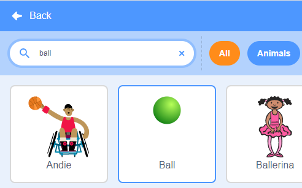
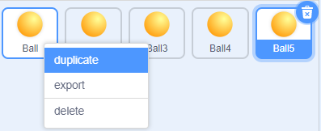
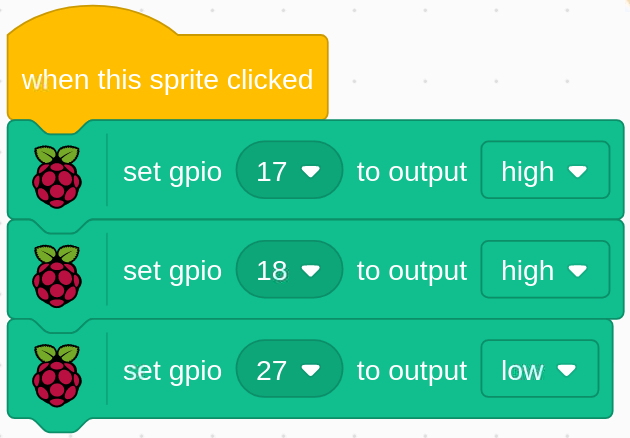

Note
Bonjour et bienvenue dans la communauté SunFounder Raspberry Pi & Arduino & ESP32 Enthusiasts sur Facebook ! Plongez plus profondément dans l’univers de Raspberry Pi, Arduino et ESP32 avec d’autres passionnés.
Pourquoi nous rejoindre ?
Support d’experts : Résolvez vos problèmes après-vente et vos défis techniques avec l’aide de notre communauté et de notre équipe.
Apprenez et partagez : Échangez des astuces et des tutoriels pour améliorer vos compétences.
Aperçus exclusifs : Accédez en avant-première aux annonces de nouveaux produits et aux avant-premières.
Réductions exclusives : Profitez de réductions sur nos derniers produits.
Promotions festives et cadeaux : Participez à des promotions et à des cadeaux lors des fêtes.
üëâ Pr√™t √† explorer et cr√©er avec nous ? Cliquez sur [Ici] et rejoignez-nous d√®s aujourd‚Äôhui !
1.2 Boules colorées
Cliquer sur les différentes boules colorées dans la zone de scène fera s’allumer la LED RVB dans différentes couleurs.

Composants nécessaires

Construire le circuit

Charger le code et voir ce qui se passe
Après avoir chargé le fichier de code (1.2_colorful_balls.sb3) dans Scratch 3, la LED RVB s’allumera en jaune, bleu, rouge, vert ou violet en fonction de la boule sur laquelle vous cliquez.
Conseils sur les sprites
Supprimez le sprite par défaut, puis choisissez le sprite Ball.
Dupliquez-le 5 fois.
Choisissez des costumes différents pour ces 5 sprites Ball et placez-les aux positions correspondantes.

Conseils sur le code
Avant de comprendre le code, nous devons d’abord comprendre le RGB color model.
Le modèle de couleur RVB est un modèle additif où la lumière rouge, verte et bleue est ajoutée de différentes manières pour reproduire une large gamme de couleurs.
Mélange additif de couleurs : ajouter du rouge au vert donne du jaune ; ajouter du vert au bleu donne du cyan ; ajouter du bleu au rouge donne du magenta ; mélanger les trois couleurs primaires donne du blanc.

Une LED RVB est une combinaison de 3 LEDs (rouge, verte et bleue) dans un seul boîtier. En combinant ces trois couleurs, on peut produire presque n’importe quelle couleur. Elle possède 4 broches, dont l’une est reliée à la masse (GND) et les 3 autres contrôlent les 3 LEDs respectives.
Le code pour allumer la LED RVB en jaune est le suivant.
Lorsque le sprite Ball (boule jaune) est cliqué, nous réglons gpio17 sur haut (LED rouge allumée), gpio18 sur haut (LED verte allumée) et gpio27 sur bas (LED bleue éteinte), ce qui fait que la LED RVB s’allume en jaune.
Vous pouvez écrire des codes similaires pour les autres sprites afin de faire s’allumer la LED RVB dans les couleurs correspondantes.